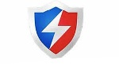

There are loads of free anti phishing software to choose from. Every website you visit has one or more forms on it, so if you don’t make a habit of regularly checking to see if you’re on a secured site, you might fall victim. Anti Phishing software works by installing a small program that monitors all of the forms on the site you visit. If one of those forms isn’t https, the program alerts you, and on a secured site, it will provide a secure form.

Baidu Anti-Phishing is simple antivirus software which helps protect your system against phishing attacks. It can also be installed to prevent other online hazards, including protection from file download and a hacker firewall.
Bitdefender is an additional cost-free anti phishing program for Windows listed here. According to its official internet site, this program shields you against internet phishing attacks that aim to steal your login data while surfing the Internet. The program features a single switch which allows you to click the anti phishing and security protection to be executed.
Total Security is yet another anti phishing software that provides protection from phishing attacks, malware, trojans, data theft, etc. for Windows and macOS.
You can make a complete PC check and virus scan to uncover system problems and security threats. It scans system settings, running processes, startup items, system critical files, and much more to discover issues that your PC is going through. After the issue has been found, it is resolved so that your computer system can be kept in the best condition.
Avira is the second free antivirus application which also offers protection against anti phishing tasks. You can use it to block real-time spyware on your computer and you can run scan routines for seeking out infected files or applications. It uses the Browser Safety feature of Firefox and Google Chrome to access your credit card info and internet activities so they remain encrypted at all times.
Thunderbird is a protection against phishing email client attacks. This is one of the most prevalent kinds of internet fraud. It also allows you to be safe when you’re attempting to click a link that has been possibly hacked or compromised.
To summarize, Phishing is a huge problem. With Phishing, hackers trick users into giving up personal information before thinking twice. So, it's important to use anti Phishing software. An excellent anti Phishing software for Windows is Threatfire. Threatfire is a powerful anti Phishing tool, and it's free for personal and commercial use.